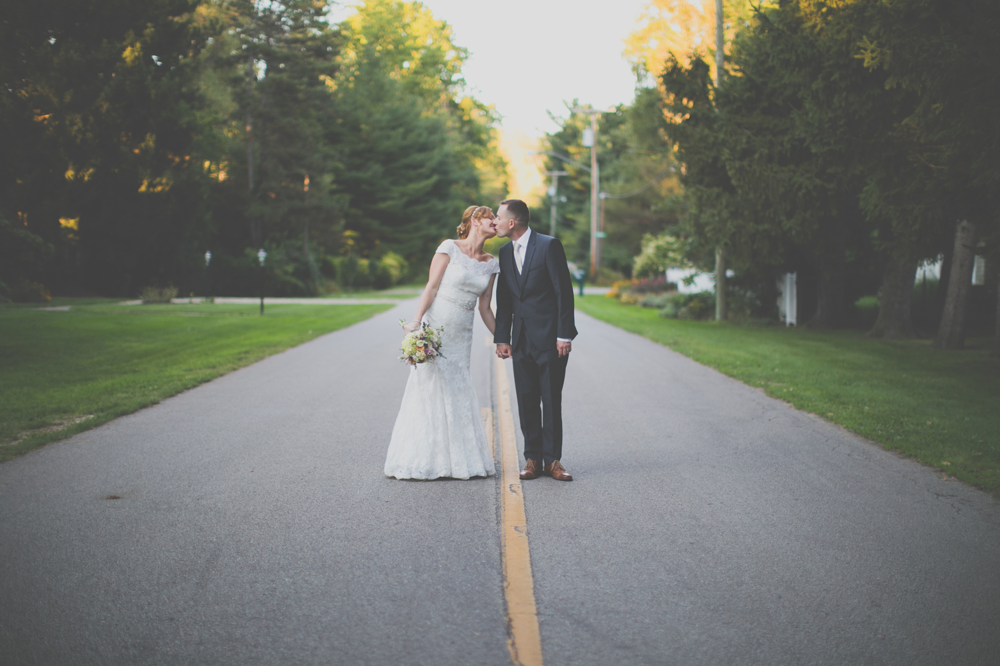

A portrait is a painting, photograph, sculpture, or other artistic representation of a person, in which the face and its expression is predominant. The intent is to display the likeness, personality, and even the mood of the person. For this reason, in photography a portrait is generally not a snapshot, but a composed image of a person in a still position. A portrait often shows a person looking directly at the painter or photographer, in order to most successfully engage the subject with the viewer.

SERVICES
Portrait
Wedding
A wedding is a ceremony where two people or a couple are united in marriage. Wedding traditions and customs vary greatly between cultures, ethnic groups, religions, countries, and social classes. Most wedding ceremonies involve an exchange of marriage vows by the couple, presentation of a gift (offering, ring(s), symbolic item, flowers, money), and a public proclamation of marriage by an authority figure or celebrant. Special wedding garments are often worn, and the ceremony is sometimes followed by a wedding reception. Music, poetry, prayers or readings from religious texts or literature are also commonly incorporated into the ceremony.
Engagement
An engagement, betrothal, or fiancer is a promise to wed, and also the period of time between a marriage proposal and a marriage. During this period, a couple is said to be betrothed, intended, affianced, engaged to be married, or simply engaged. Future brides and grooms may be called the betrothed, a wife-to-be or husband-to-be, fiancée or fiancé (from the French word of the same form), respectively. The duration of the courtship varies vastly, and is largely dependent on cultural norms or upon the agreement of the parties involved.
Maternity
Maternity is being a mother.